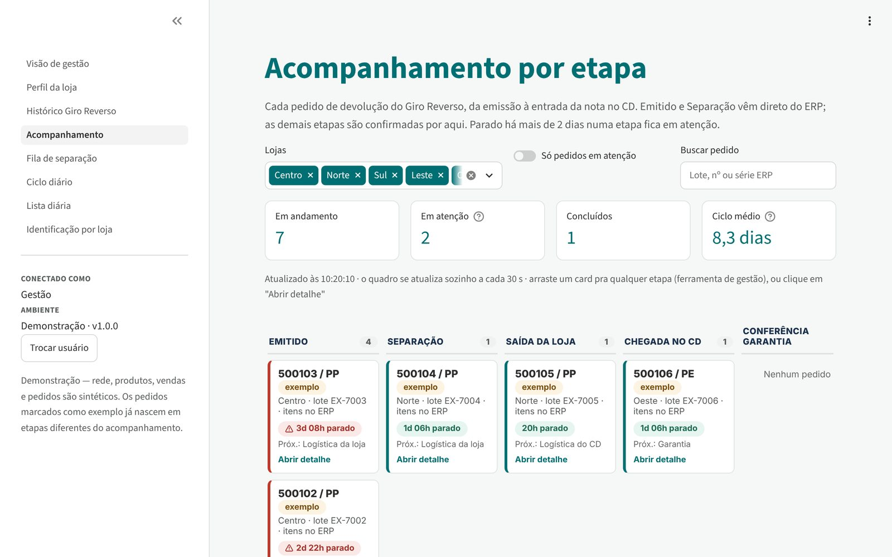
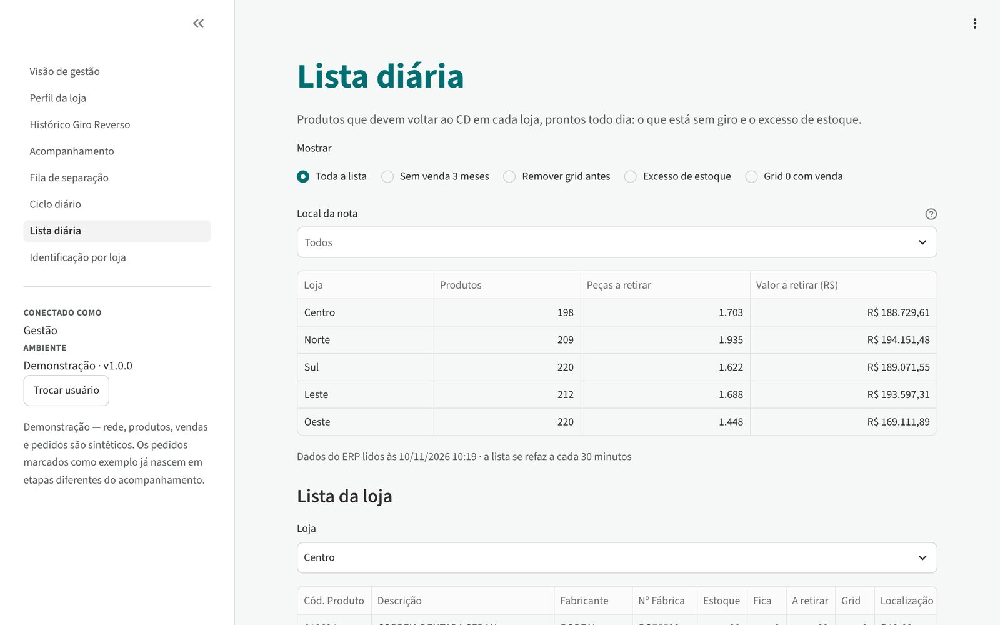
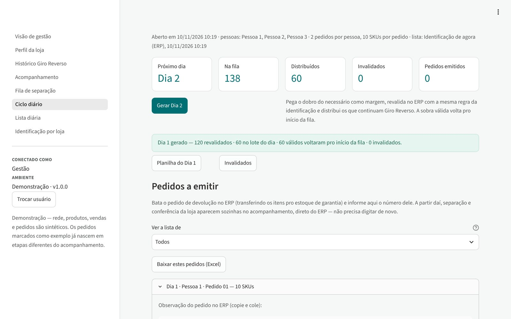
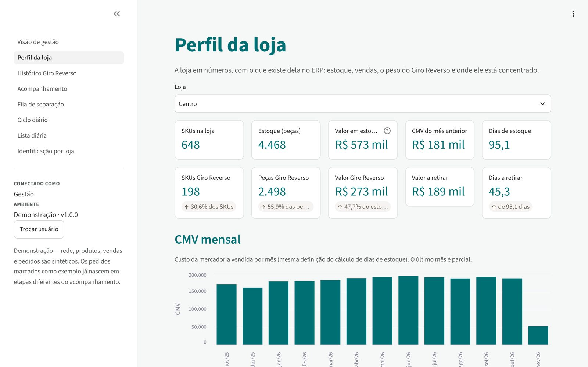
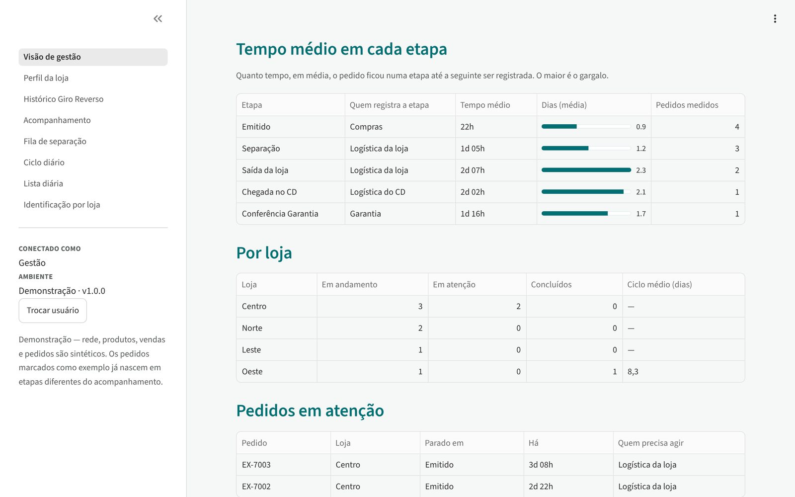

Uma aplicação para a logística reversa de estoque parado numa rede de autopeças. Uma regra estatística decide o que sai de cada loja, um ciclo diário distribui o trabalho entre os compradores e um quadro por etapa acompanha cada pedido até a entrada da nota no CD.
Peça parada na loja é capital imobilizado e espaço de gôndola. Devolvê-la ao CD libera esse capital para o resto da rede, mas o processo passa por quatro setores (Compras, Logística da loja, Logística do CD e Garantia) e por um ERP que não liga sozinho "esta peça precisa voltar" a "este pedido de devolução". A coordenação era feita numa planilha, com duas falhas:
Um único app com acesso por perfil, em que cada setor vê e registra só a sua parte:

A regra base olha o que sai: sem venda em 90 dias, devolve tudo; com venda, devolve o excesso acima da grid. A regra v2 inverte a conta. Primeiro calcula o que precisa ficar para o ERP não reabastecer a loja, e só então o que sai:
A folga é uma média móvel ponderada da demanda, com o mês mais recente pesando três vezes mais que o mais antigo. Depois vêm as exclusões, na ordem: item fiscal, nada a retirar, palheta, EV com venda, par esquerdo/direito que vendeu e produto há menos de 90 dias na loja (ainda sem janela de venda para a regra ler).
| Regra | Itens na lista | Peças a retirar | Valor a retirar |
|---|---|---|---|
| Base: devolve o que está parado ou em excesso | 1.237 | 10.222 | R$ 1,20 mi |
| v2: primeiro o que fica | 1.059 | 8.352 | R$ 0,93 mi |
A versão vetorizada (pandas/NumPy) é comparada nos testes com uma implementação item a item, em 17 casos de referência e 60 mil entradas aleatórias.


A aplicação original lia o ERP de uma empresa. Para publicar, troquei só a camada de dados por um ERP sintético reprodutível (semente fixa), que entrega as mesmas colunas e preserva os padrões que a regra precisa encontrar:


domain/), separadas das telas e do banco, e testadas uma a uma. As telas também
rodam nos testes, com streamlit.testing.AppTest sobre um ERP simulado.st.cache_resource e o piso de peças é aplicado numa segunda
camada. Trocar um parâmetro não relê o ERP.| Item | Detalhe |
|---|---|
| Contexto | Inteligência de mercado no varejo de autopeças (rede com CD e lojas) |
| Dados | Sintéticos: catálogo de ~1.200 peças em 14 grupos, 5 lojas, vendas Poisson sobre demanda log-normal |
| Métodos | Média móvel ponderada da demanda, regras de múltiplo/arredondamento, KPIs de tempo por etapa |
| Stack | Python 3.12 · Streamlit · pandas · NumPy · Polars · SQLAlchemy · pytest · Ruff |
| Como explorar | Entre como Gestão para ver tudo; em Ciclo diário, abra um ciclo, gere o dia e emita um pedido |